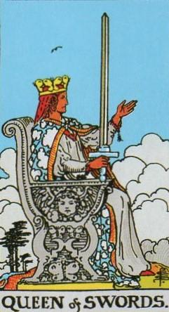
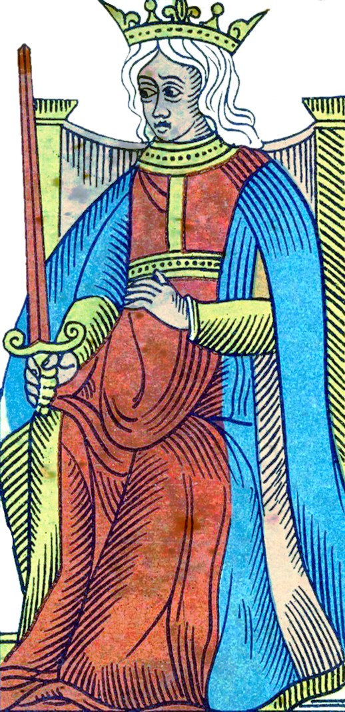
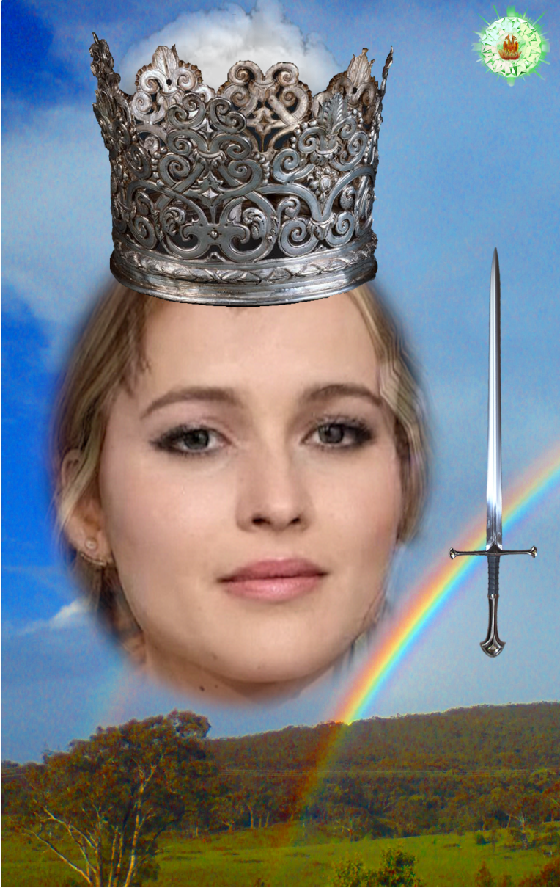
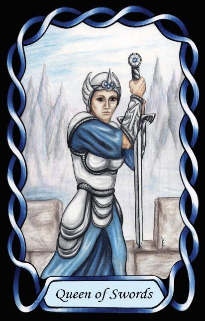

Queen of Swords
The Teacher (ENFJ – FeNi)




Queen |
Idealist: Abstract Collaborative |
||
Socio-political |
|||
Extroverted Feeling Introverted iNtuition |
|||
2.5% of population |
|||
Examples: Helena Bonham Carter, Jennifer Lawrence |
|||
Meaning of Life: Relationships |
|||
Astrology: Gemini (Female side) |
|||
Queens of Swords are driven by extroverted feeling, which leads them to harmonise with their social environment and to take responsibility for the emotional climate of the groups they belong to. They show a great deal of empathy, sympathy, and support for others, but unlike the Cups suit, their empathy is structured, directed, and socially strategic. They want people not only to feel better, but to behave better, and to treat one another with fairness and respect.
Behind this lies their introverted intuition, giving them a strong internal vision of how society should function. They hold clear, abstract ideals about justice, ethics, and the proper organisation of human relationships. This combination makes them natural educators — not in the academic sense, but in the moral-guiding, socially shaping sense. They teach through influence, example, and emotional leadership.
As Idealists in an Air suit, Queens of Swords work at the intersection of emotion and structure. They use feeling to understand people, and intuition to see the long-term consequences of actions. Their goal is to guide others toward a more harmonious and ethically coherent society. They are persuasive, articulate, and socially aware, able to influence people toward the path they believe is right.
Whereas the Queens of Cups inspires change through emotional expression, the Queens of Swords bring about change through ethical persuasion, reasoned guidance, and social leadership. She is the Idealist who shapes communities, not just individuals, and who seeks to align society with her vision of how people ought to treat one another.